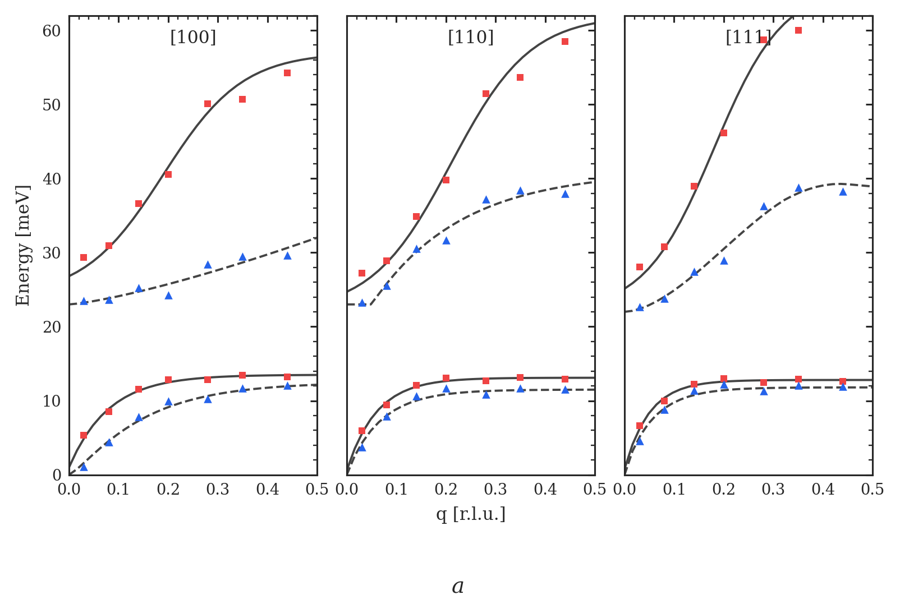
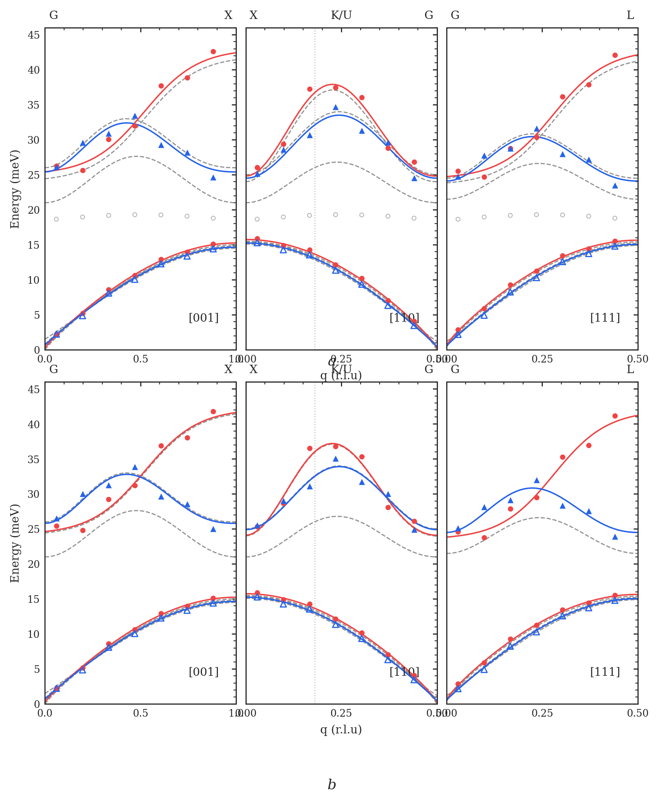

Dispersion-style figure demos
These figures are demo layouts in the style of publication phonon-dispersion plots.
Replace the CSV values in dispersion_style_charts/examples/ with your real q-dependent data.
demo_triptych
Open image
demo_six_panel
Open image